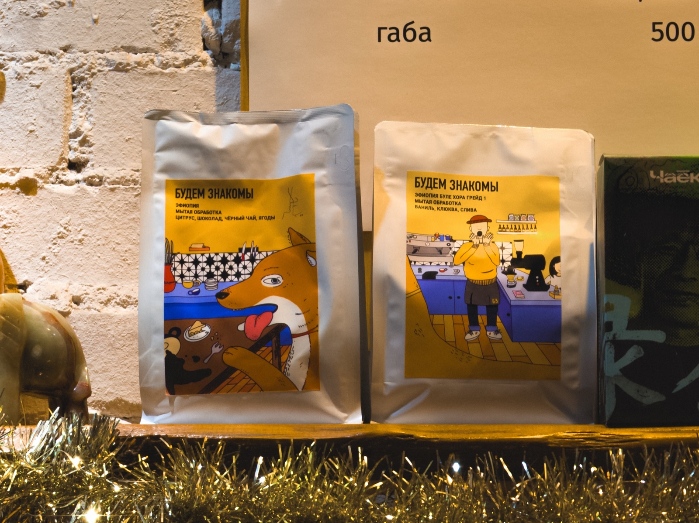
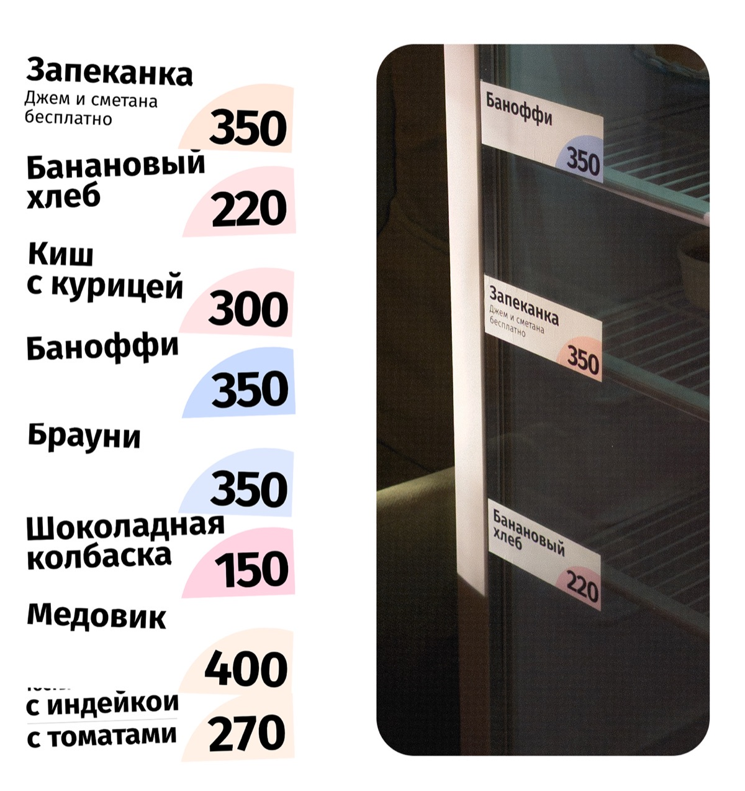
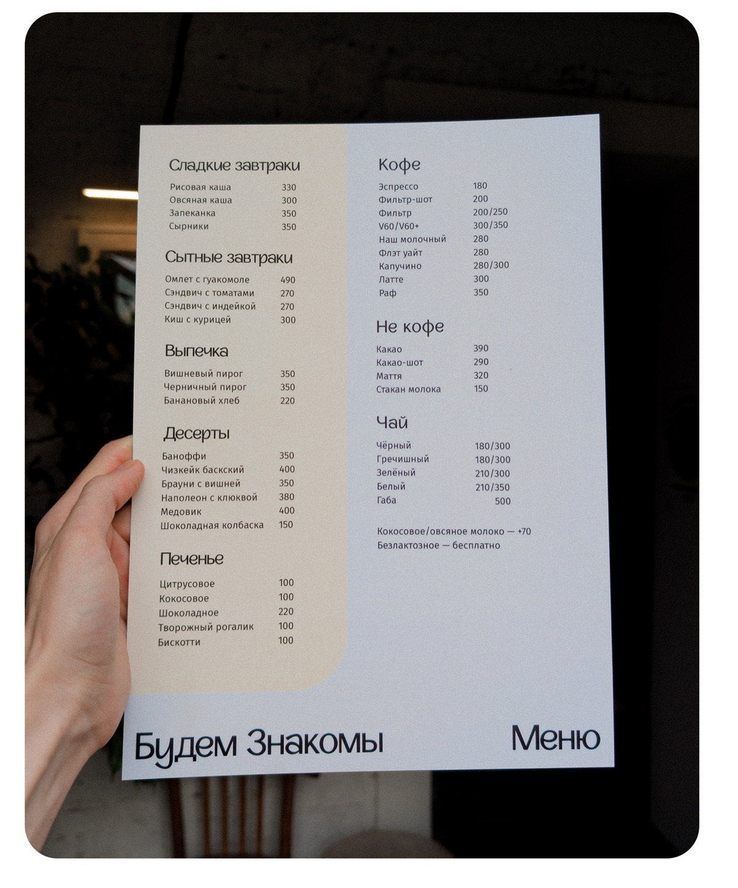
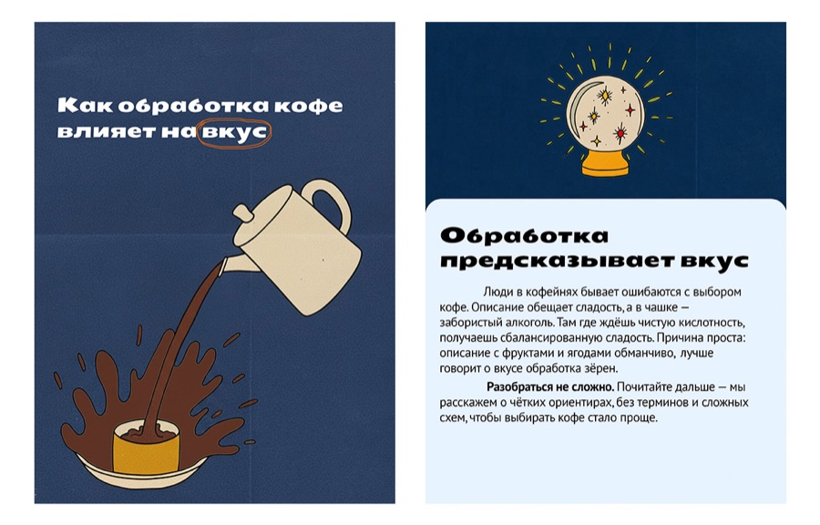
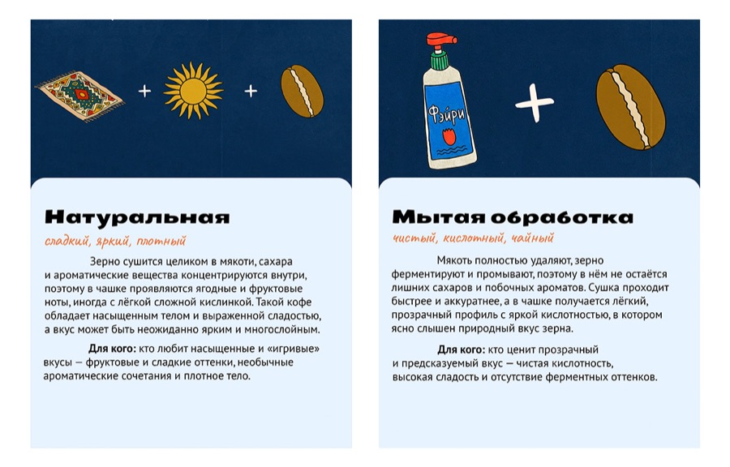
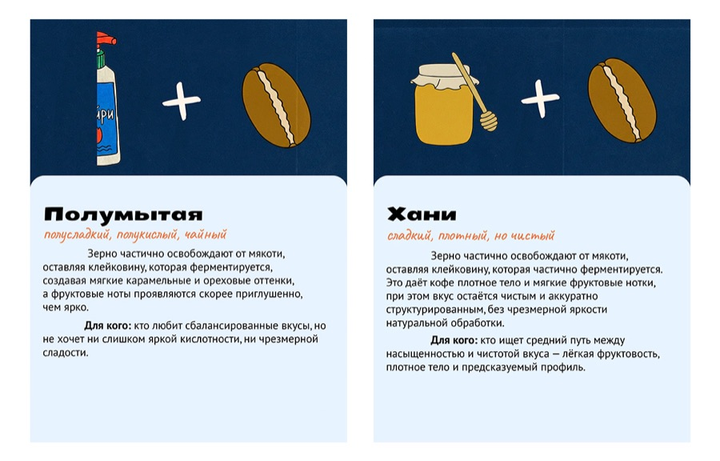

Зерно для «Будем Знакомы»
Кофейня «Будем Знакомы» сама обжаривает зерно и продаёт его пачками. Пачки стояли в зале, но их почти не покупали: гости не понимали, что это товар и зачем брать его домой.
Я работал там бариста и сделал зерно заметным — сначала в зале, потом на сайте.

Заметить пачку
Гости не читали материалы, а сотрудники тратили время на объяснения. Начал с печати: меню, ценники, карточки сортов.
Главное в ценнике — цена. Она стоит крупно, в цветном секторе, а название и пояснение — над ней.
Ценники по образцу настоящих. Отойди от витрины.


Гостям стало проще, но опросы гостей и коллег показали другое: материалы удобные, но не запоминаются. Порядок есть, образа кофейни нет.
Понять, какое это зерно
У сорта на сайте — страна, обработка рукописным и вкус словами: цитрус, ягоды, цветы.


Пока сайт собирался, я вёл Telegram-канал кофейни: сорта, вкус, заваривание. Посты — в стиле будущего сайта.



Выбрать помол и заказать
Перепечатывать всё было дорого, поэтому новый стиль я делал сразу на сайте. Заголовки — широким Seymour One, акценты — рукописным Caveat, оранжевый — только для действий.
«Купить зерна» — первая кнопка первого экрана, раньше адресов и меню. Помол выбирается прямо в карточке.
Сборка сайта из исходников. Заказ отсюда никуда не уходит.
Как сайт собирался
Первый прототип я собрал в Figma Make. Дальше правил код через чат с нейросетью: отправлял файл, писал, каким должен быть экран, и вставлял ответ обратно. Сайт падал целиком, спасали коммиты.
Журнал коммитов: 38, из них 22 за первый день
Настоящая история коммитов сайта.
Результаты
Сайт запустили к 20 декабря и анонсировали в соцсетях. Заявки принимаются, а вместо админки — Telegram-бот. Бюджета не было: иллюстрации нарисовала нейросеть, хостинг бесплатный.
Продажи не измерялись: продвижение и аналитику не подключали. Руководство сделало ставку на видео, и на этом моя работа закончилась.
Титры
- Печать, визуал, канал, сайт
- Алексей Сергеев
- Сайт
- React и Vite; budemznakomy.shop
- Шрифты
- Seymour One, Caveat, Gibbs Sans, PT Sans